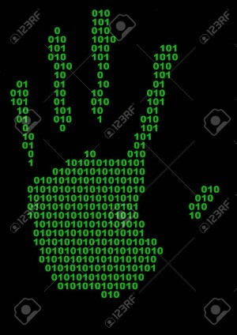

The way biometrics works is by analyzing and identifying individual and unique attributes of someone. Biometrics uses computer science algorithms such as binary numbers.
They use binary numbers as an algorithm to identify the features of what is given to the computer. The computer then uses those numbers to analyze and match the features to an individual. 
This is great for society as the need for privacy grows, and since every individual has their very own unique features, its considerably hard to impersonate someone or simply swipe their credit card. However, that doesn’t mean it’s impossible. If you’ve ever seen a movie that has to do with national security, FBI, or even some kind of top secret intelligence, chances are, that you’ve seen biometric scans happen. Even in the Disney Pixar movies, The Incredibles & The Incredibles 2 .

Of course however, like any technology, there could be glitches in the way it works or scans. Or, in the case of a situation as it has happened in the movie National Treasure. In the photo below, it features the actors making a mold type copy of a fingerprint to bypass security.
| Movie | Biometrics used |
|---|---|
| Central Intelligence | Eye, face, finger, hand, and voice scan |
| RoboCop | Face scan |
| Ready Player One | Eye, face, voice, and hand scan |
| Wall-E | Scan to detect life |